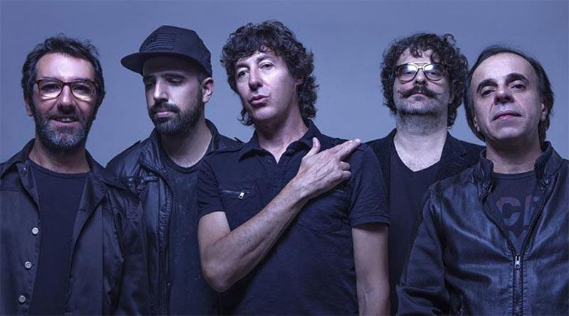

El Cuarteto de Nos es una banda de rock Uruguayo formado en 1980. Esta inegrada por el cantante Roberto Musso, el bajista Santiago Tavella, el baterista Alvaro Pintos, el guitarrista y corista Gustavo Antuña y el tecladista Santiago Marrero.
Hicieron su debut en el año 1984 con el lanzamiento de su album Split Alberto Wolf/el Cuarteto de Nos, en colaboracion con el musico uruguayo Alberto Wolf. A partir de 1987 empezaron a realizar su primer album como solista, llamado "Soy una arveja" donde el ambiente se centra en Tajo (ciudad ficticia creada por Roberto Musso y su hermano Ricardo Musso). Un año despues lanzaron Emilio Garcia, en 1991 salio a la venta "Cnaciones del corazon", ultimo disco lanzado bajo la dicografia Orfeo. Despues de varios desacuerdos deciden afiliarse con Ayui/Tacuabe, y en 1994 salio al mercado "otra navidad en las trincheras", en donde obtuvo exito en su lugar de origen, como en el occidente, logrando llegar a las 6000 copias y obtener el certificado platino y oro.
En 1966 salio al mercado el tren bala, album que genero polemica debido al tema de apertura "El dia que Artigas se emborracho";llegando al punto de recibir una denuncia penal por el ministerio de educacion y cultura de Uruguay. En 1998 se lanzo el album ¡¡Esta!! deespues de 2 años sin subir ningun album, considerado el mas roquero por parte de la agrupacion. El polemico "cortamambo"(2000) siguio con temas politicamente incorrectos y fue marcado como humor negro. Durante este periodo Ricardo Musso se retira momentaneamente debido a problemas relacionados con la portada del disco, por consciente el Cuarteto de nos dejo de hacer shows en vivo durante un año
Volvieron a incursionar al exito con la salida del album recopilatorio "Homonimo" en 2004 bajo el sello de bizarro, donde regrabaron sus temas antiguos con 3 temas nuevos. Con el lanzamiento de Raro (2006) lograron obtener mas reconocimiento mundial, incluye exitos como "Ya nose que hacer conmigo"; "Invierno del 92" y el sencillo "Yendo a la casa de Damian" que fue dominado a los premios Grammy latinos en la categoria "mejor cancion de rock".
Despues del lanzamiento de Bipolar (2009) marcaria el retiro definitivo de Ricardo Musso debido a problemas de discografia. En este punto la banda se afilio a una reinvencion, combinando la musica hip-hop, con elementos pop; esto se ve reflejado en lanzamientos anteriores como porfiado (2012), habla tu espejo (2014), apocalipsis zombi (2017), Jueves (2019), y Lamina once (2022)